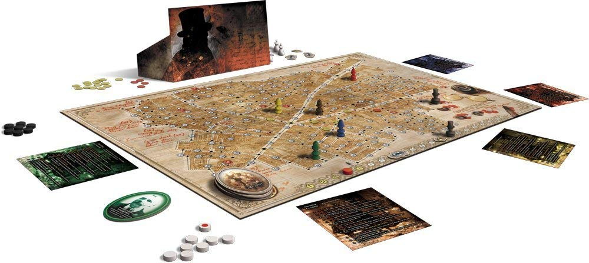
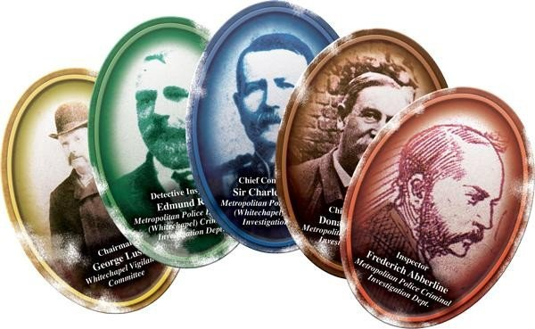

ARTICLES
Letters From Whitechapel : Boardgame
- 6 minutes read - 1135 wordsThe date was Saturday 8 September 1988. I grabbed my Top Hat and medical bag as I rushed away from the body. I steadied myself as I walked onto Whitechapel High street and flagged down a carriage. Calmly I told the driver “Crossing between Aldgate High street and Hounds ditch, please.” while opening the carriage door and stepping inside. I quickly drew the curtains and sat back. As I felt the coach lurch away, I could hear a police whistle being blown. Damn, I thought, again they were on my trail. It would probably be the same 3 female Inspectors working the case as last time. I do not want a repeat, I just narrowly escaped. I could hear more whistles but they were fading out in the distance. Soon they would start closing the net around me. I have to think fast and react quickly to their manoeuvres. Ok, here’s the plan, I’ll move as far as I can along the main roads to get closer to my hideout and then use the smaller back streets to avoid them. Because of how tight it was last time I knew they had to know in which area I was hiding out. I felt my heart racing and could feel the rhythm in my throat. Get a grip man! “We’re here Sir.” said the driver. I opened the door, stepped out onto the street and donned my top hat. It was a foggy, cold night. I handed the fare to the driver while shading my face underneath my hat. Don’t run, I thought to myself. As composed as I managed, I walked further down keeping to the shadows close to the houses lining the street.

I turned the corner quickly and leaned up against one of the walls, catching my breath. “How did they know where I was heading?” I felt like they were in my head, it felt like they knew where I was heading even before I knew. “Calm down, calm down. You’re almost there.” I kept telling myself to try and steady my nerves. Taking a deep breath and slowly exhaling I tore myself from the wall I was leaning against and started running again. I ran the entire length of the road and just before it connected back with the high street I slowed down my pace. I knew that to my right was Alex, or that’s at least the last position I knew she was in. So, I swiftly crossed the street and headed to my left, further down the high street. They forced me to approach my hideout from the other direction, I could not reach it via the most direct route. So, the new route now, was to continue on until the first street on the left, one that doubled back parallel with the high street and than the first right to reach my hideout. Handheld lanterns like little dots in the distance and dogs barking pulled me away from my inner thoughts. More police. It could only be Harriet, the last of the three Inspectors.

I had to move quickly now, I could not afford more detours. I took a chance and ran up to a coach where a driver was feeding the horses. “To the next junction” I yelled as I boarded. The driver took his time but eventually we were on the move. I had timed it right, they were only just blocking up the road and stopping pedestrians but not minding the coaches. Luck was on my side this time and I let out a sigh of relief when I passed Harriet. I leaned back and looked at the roof of the coach while I let my body be rocked back and forth by the swaying of the coach. As the coach came to a stop I exited and handed the coach driver a bit more then the asked fare. Without waiting for a response I turned into the street that doubled back and ran the whole way. I turned right into the street of my hideout, grabbed the keys out of my coat pocket with my free hand and jammed the key into the lock of the door and turned it quickly. The satisfying snap of the lock and the creaking of the door as I swung it open caused a wave of exhilaration to wash over me. I had done it, I was safe!
We played this game and before we realised it, it was 03:30 in the morning. That is how good this game was for us. All the players were invested in this game and it was a very good cat and mouse game all throughout. It does take some time to play especially when the inspectors are discussing what to do. But as Jack I felt like they were in my head, purely by deductive reasoning and communication amongst each other they made my enjoyment of the game more interesting as I was constantly on edge. This was mutual though as I made clear to them how close they were which made them double their efforts.